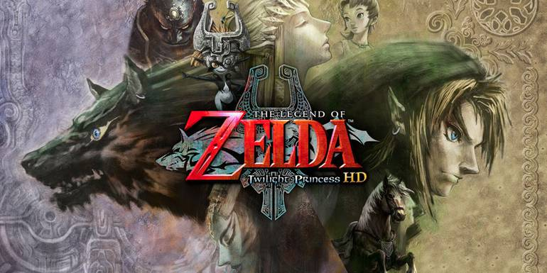
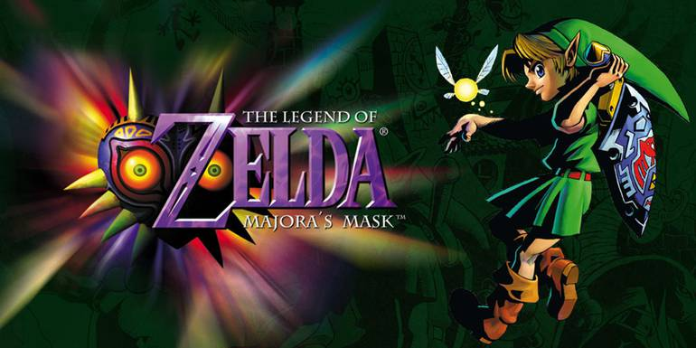
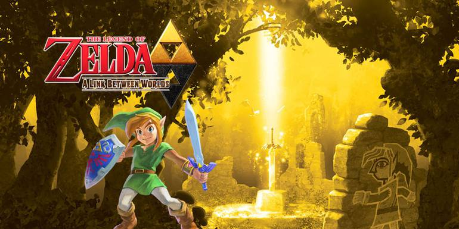
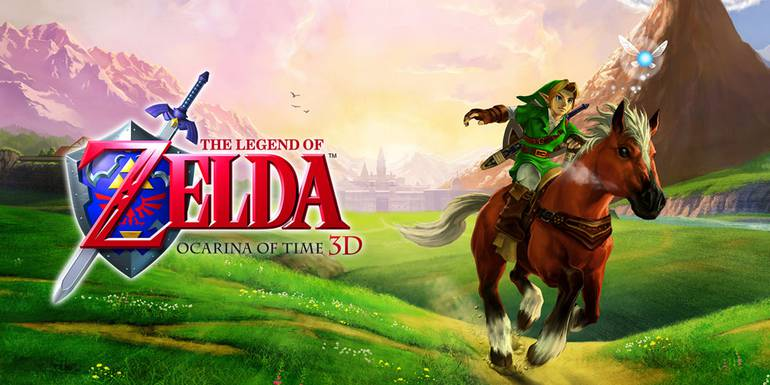
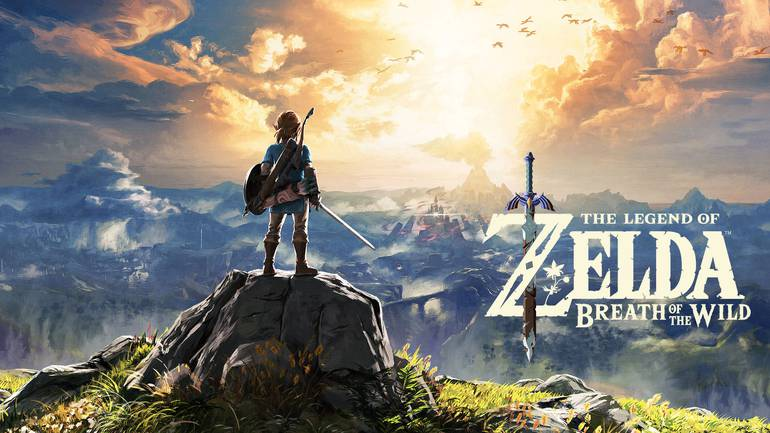

5. Twilight Princess (2006) - GC e Wii

Esse é o jogo que os fãs mais ardentes de Ocarina of Time queriam após as liberdades criativas tomadas por Majora’s Mask e The Wind Waker: um retorno à Hyrule clássica, com uma atmosfera sombria e opressora e toques divertidos de esquisitices na sua metade final.
O Wolf Link é uma adição muito bacana e é divertido ver Link evoluir nessa forma, transformando o que inicialmente é fragilidade em um ponto forte. Porém, assim como Skyward Sword, o jogo se alonga demais nas primeiras horas. Twilight Princess foi outro que ganhou versão HD no Wii U, lá em 2016, e a gente tá aqui esperando a Nintendo relançar no Switch também.
|
4. Majora’s Mask (2000) - N64

O famigerado Majora’s Mask é um jogo muito à frente de seu tempo e foge muito do que se espera de um Zelda tradicional. O jogo traz um mundo vivo e pulsante e em que, absolutamente todos os personagens, por mais insignificantes que eles pareçam em um primeiro momento, têm uma história interessante para contar.
Majora’s também é marcante por não esconder a crueldade e a dureza da realidade vivida pelos personagens, o que faz com que você desenvolva empatia por Termina e por seus habitantes de um jeito bem orgânico.
Isso, por si só, é um grande feito, já que todo o conceito de Termina gira em torno da ideia de um mundo “alienígena” e incômodo, ao qual o Link não pertence. No início da jornada, você só pensa em voltar para casa; mas ao final, você não quer ir embora. Majora’s Mask também ganhou um relançamento com melhores gráficos e aperfeiçoamentos mecânicos em 2015 no 3DS.
|
3. A Link Between Worlds (2013) - 3DS

Pra homenagear e continuar a linha do tempo de A Link To The Past — que já tinha ganhado três sequências nos Game Boy — a Nintendo lançou A Link Between Worlds, um Zelda com visão de cima pra baixo com modelos em 3D extremamente fofinhos. O game traz uma mecânica muito maneira de virar uma pintura chapada 2D e passar pelas paredes e um segundo reino que é antítese de Hyrule chamado Lorule.
Between Worlds reinventou os conceitos do Zelda top down como Breath of the Wild fez para o Zelda 3D, e jogou no lixo a estrutura linear da série que tava cansada naquele momento. É o que há de melhor nos Zeldas dessa categoria em todos os sentidos.
|
2. Ocarina of Time (1998) - N64

E, é claro, a gente precisa falar de Ocarina of Time. Ocarina foi o primeiro Zelda 3D e deu mais importância para a parte narrativa na franquia, trazendo um novo nível de excelência não só nas cinemáticas, mas também no som, nas mecânicas e no level design. Foi também o jogo que criou a bifurcação de realidades paralelas na linha do tempo da série.
Talvez esse seja o Zelda mais importante historicamente. Mas, mais do que uma contribuição para o histórico de Zelda, Ocarina foi uma grande contribuição para a história do desenvolvimento de games. Ele se tornou extremamente influente e foi considerado por inúmeros fãs e veículos de imprensa um dos melhores jogos de todos os tempos e a aventura 3D primordial.
Em 2002, a Nintendo lançou uma versão retrabalhada do jogo no GameCube, a edição Master Quest. E, em 2011, o 3DS recebeu um remake com recursos 3D que também melhorou visuais, controles e interfaces.
|
1. Breath of the Wild (2017) - Switch e Wii U

Bom, se Ocarina ficou em segundo, o primeiro lugar tinha que ficar com Breath of the Wild. A Nintendo misturou a sensação de livre exploração do Zelda original, alguns recursos de Skyward Sword, a estética dos filmes Ghibli, alguns paradigmas de mundo aberto contemporâneos e criou uma nova obra prima.
A exploração é incrível, o combate é excelente, a história é instigante, a física e as mecânicas tem várias camadas de profundidade e tudo nele é extremamente adorável, viciante e, principalmente, livre de amarras. Pensa num jogo que deixa você fazer o que quiser.
Breath of the Wild condensa o “estilo Nintendo” de se fazer videogames da forma mais pura: um conceito simples e divertido que se expande, contrai, contorce e se dobra de todas as maneiras imagináveis. Tudo o que o jogo podia fazer com as ferramentas que ele põe nas mãos de Link, ele fez — e o sistema é aberto o suficiente para que o próprio jogador encontre maneiras de quebrar e expandir ele ainda mais com base na sua própria engenhosidade. E que venha a sequência!
|